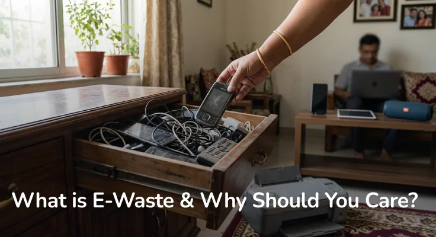

You cleared out your drawer last weekend and found three old phones, a
charger that fits nothing you own anymore, and a printer that stopped
working two years ago. Sound familiar?
Most of us have a graveyard of old gadgets sitting somewhere at home. We
know we should do something about them. We just never quite get around
to it.
That pile has a name: e-waste. And it is one of the fastest-growing
waste problems on the planet. At e2e Recycling Business Private Limited,
providing professional e-waste management services across
Bangalore, Hyderabad, and
Chennai, we see this every single day, and we know that
most people genuinely want to do the right thing. They just need to know
where to start.
What is e-waste? E-waste, short for electronic waste,
is any electrical or electronic device that has reached the end of its
useful life. That covers a wider range than most people realise.
Smartphones, laptops, televisions, refrigerators, air conditioners,
washing machines, medical devices, LED bulbs—if it has a plug, a
battery, or a circuit board, it qualifies.
The moment you stop using it and throw it away, it becomes e-waste.
In 2022, the world generated 62 million tonnes of e-waste. That is
roughly the weight of 107,000 Boeing 747s. By 2030, that number is
expected to cross 82 million tonnes.
India alone contributes over 3 million tonnes of e-waste every year,
making it the third-largest generator in the world, behind only China
and the United States.
The numbers are staggering. But the bigger problem is what happens to
most of this waste.
Less than 25% of e-waste globally is recycled through proper channels.
The rest? It gets dumped in landfills, burned in the open, or broken
apart by hand in informal scrap yards, often without any safety
protection.
When electronics sit in landfills, the toxic materials inside them—lead,
mercury, cadmium, arsenic—start leaching into the soil and groundwater.
When they are burned, these same materials release into the air. People
who live and work near these sites face serious health risks, including
nerve damage, kidney problems, and respiratory disease.
It is not just a faraway problem either. The effects move through the
food chain, the water supply, and eventually, through us.
Two reasons, mainly.
First, we are buying more electronics than ever. New phone models every
year. Laptops that feel outdated in three years. Wearables, smart home
devices, wireless earbuds. The cycle of buying and replacing has become
very short.
Second, most of these devices are designed to be replaced, not repaired.
Parts are hard to source. Batteries are glued in. Software updates stop
coming. The path of least resistance is always a new purchase.
This is called planned obsolescence, and it quietly drives millions of
devices into the waste stream every year.
A typical smartphone contains over 60 different materials. Some of them
are valuable, like gold, silver, copper, and cobalt. Some of them are
highly toxic, like lead in solder joints, mercury in some older screens,
and cadmium in rechargeable batteries.
When handled properly, these materials can be safely extracted and
reused. When handled carelessly, they become a serious hazard.
But here is the other side of the story.
One tonne of mobile phones contains more gold than one tonne of gold ore
mined from the earth. Recovering metals from old electronics uses
significantly less energy than mining new ones. If we recycled e-waste
at scale, we could reduce the demand for environmentally destructive
mining while also creating a sustainable supply chain for the materials
that power our devices.
This is what the circular economy looks like in practice: a world where
yesterday's phone becomes tomorrow's raw material.
You do not have to be an environmental scientist to care about this. The
choices you make about your old electronics have a real impact, whether
that is on a child growing up near a dump site in another part of the
country, or on the groundwater in your own region, be it in
Bangalore, Chennai, or
Hyderabad.
The good news is, it is not complicated to do the right thing.
Responsible e-waste disposal is more accessible than it used to be. And
starting with that drawer full of old gadgets is the easiest first step
you can take.